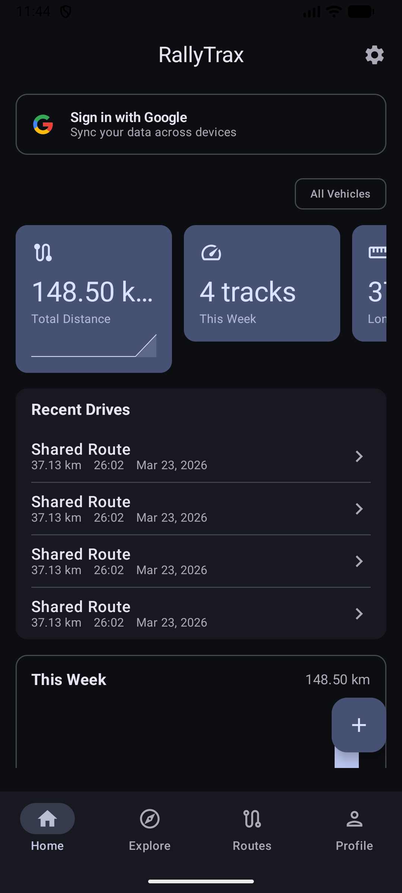
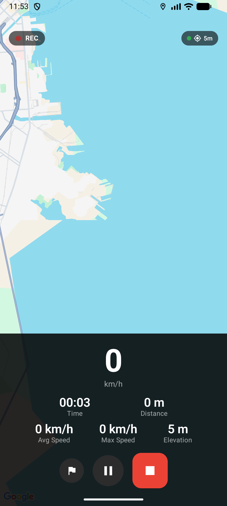
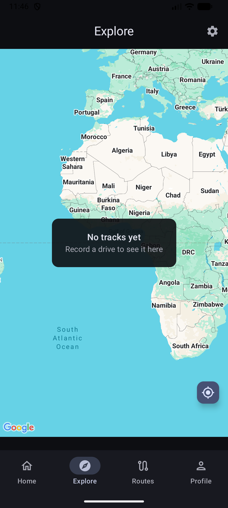
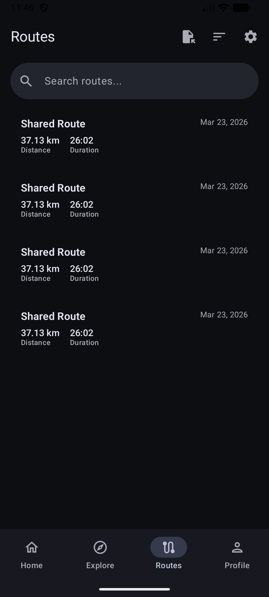
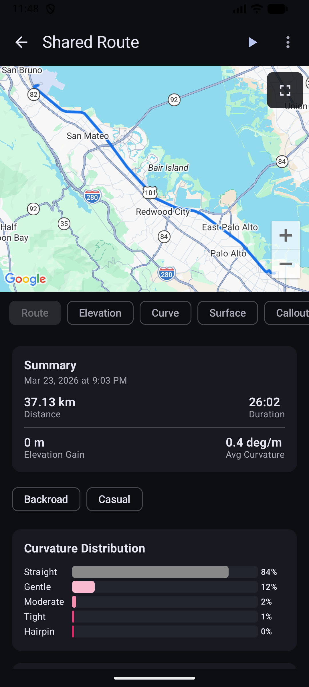
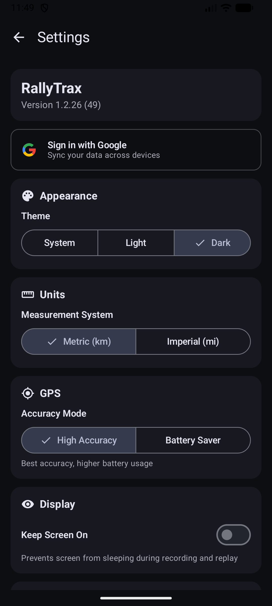

Record your favourite drives, then replay them with a synthetic co-driver calling out every turn, crest, and hazard — just like a professional rally navigator.
Free on GitHub Releases · Android 10+

Tap record and drive. RallyTrax uses high-accuracy GPS to trace your route in real-time, capturing every twist, elevation change, and speed variation. Pause mid-drive, resume later — your track stays intact.

Browse all your recorded tracks on an interactive map. Switch between visualization layers — speed heatmap, elevation profile, curvature analysis, and acceleration data — to understand your driving in new ways.

Every drive you record lives in your Library — searchable, sortable, and tagged the way you want. See the route on a map, browse elevation profiles, and export to GPX to share with friends.

After recording, RallyTrax analyses your track's geometry — every bend radius, elevation change, and straight — to generate authentic rally-style pace notes, graded 1 to 6 just like the pros use.

Select any saved track and hit replay. As you drive, RallyTrax matches your GPS position to the route and reads out pace notes through your speakers — timed to your speed, with a chime before each call.
Track every vehicle you drive. Log fuel fill-ups, schedule maintenance reminders, and scan your VIN to auto-populate vehicle details. Each vehicle shows linked tracks and lifetime driving stats.

Tap the record button and drive your favourite road. The app captures GPS coordinates, speed, and elevation every second.
RallyTrax analyses the track geometry and produces rally-style pace notes — turns, crests, straights — graded on the 1-to-6 severity scale.
Drive the route again while your phone calls out every turn ahead of time — timed to your speed, just like a real rally co-driver.
Download RallyTrax free from GitHub Releases. Record your first drive today.
Download for AndroidAndroid 10+ · Free · No account required